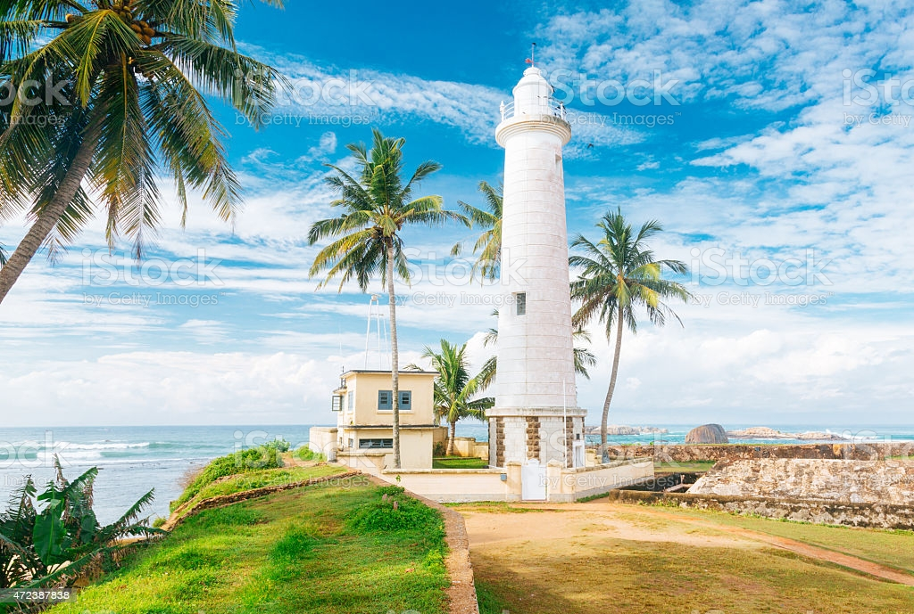
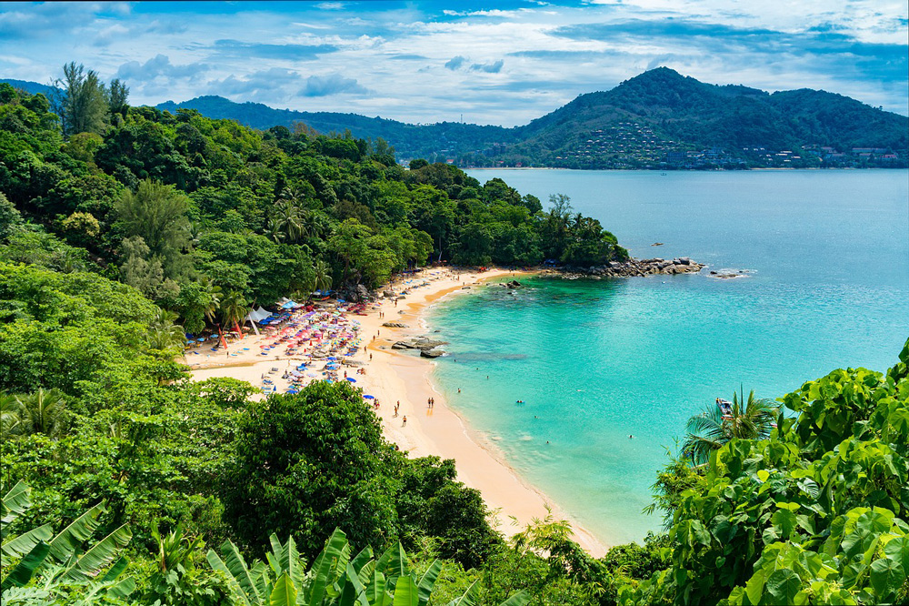

GALLE FORT

Commonly referred to as the Dutch Fort, this is one of the most beautiful Galle attractions for being an extraordinary historical and archaeological site. Initially constructed by Portuguese in the late 16th century, later it was fortified by the Dutch somewhere near 17th century. It brings together archeology, architecture, and history with a buzzing ambiance of shops, cafes, and stores luring tourists from around the world to visit this fort. One of the most highly rated places to visit in the Galle fort is the Galle lighthouse and Mansion museum.
GALLE FORT LIGHTHOUSE
Your Galle sightseeing tour won’t be complete without a visit to the popular Galle Lighthouse. Nestled within the Galle Fort, this lighthouse is gorgeous. The stunning design and architecture and the vibe it radiates are unforgettable. You can see the far off oceans which face the oldest lighthouse in Sri Lanka.
UNAWATUNA BEACH
The default beach for those visiting Galle is Unawatuna, one of the most beautiful beaches in the world and one of the most beautiful places to visit in Galle. While it is not ideal for surfing, it is a great location if you want to go swimming because of the calm waters. If you are interested in snorkeling or other water sports, you can head to Jungle Beach which is located only a short walk away. This is one of the day outing places in Galle.
HISTORICAL MANSION MUSEUM

Another one of the exciting places to see in Galle is the Historical Mansion Museum. For all the history maniacs out there this place is Disneyland and for all those who wish to know more about Sri Lanka’s conflicted and controversial history this place is a paaradise. Not just that, you can also buy souvenirs or collection from here.
Discover destinations, find outdoor adventures, follow the journeys of our travel writers around the world, and be inspired.